기술백서
강력한 발전소 효율성과 수익을 달성하기 위해, 천연가스 엔진의 운영 및 서비스 관리자들은 엔진 가동 중단 시간 최소화, 오일 교환 주기 최대화, 성능 최적화에 집중해야 합니다.
자연가스 엔진 오일(NGEO)은 엔진을 윤활하는 데 사용되며, 이러한 목표들을 달성하는 데 핵심적인 요소 중 하나입니다. 실제로 이 윤활유는 엔진 설계의 일부로 간주될 수 있습니다. 때때로 엔진 전체를 순환하며 엔진 성능을 극대화하는 데 필요한 중요한 기능을 수행하기 때문에 엔진의 “생명수(lifeblood)”라고 불리기도 합니다. 또한 윤활유는 엔진 상태에 대한 정보를 담고 있으며, 이는 오일 분석을 통해 확인할 수 있습니다.
엔진 오퍼레이터는 서비스 수명, 엔진 청결 유지, 마모 방지를 극대화하는 윤활유를 사용하여 오늘날의 기준을 넘어설 때, 불필요한 유지보수 비용과 가동 중단 시간을 줄일 수 있습니다. 또한, 공장의 윤활유 제품 구성을 통합하는 사전적(Proactive) 접근 방식을 통해 추가적인 비용 절감도 실현할 수 있습니다.
이 백서에서는 윤활유가 엔진 신뢰성과 공장의 수익성에 있어 수행하는 중요한 역할을 다음과 같은 구체적인 관점에서 살펴봅니다:
- 가동 중단 시간을 줄이고 효율성과 수익성을 극대화하는 오일 교환 주기
- 엔진 최적화와 효율성을 높여 에너지 사용을 최적화하는 데 기여하는 침전물 제어, 엔진 청결 및 내구성
NGEO: 엔진 요구사항을 충족하도록 특별히 설계된 오일
저품질 및 고품질 디젤 연료와 같은 다른 연료 유형과 달리, 고정식 가스 엔진은 전통적으로 더 깨끗하고 더 높은 온도로 연소하며 일정한 속도로 작동합니다. 따라서 NGEO는 이러한 고유한 특성을 고려하여 특별히 설계되어야 합니다.
다음 표는 고정식 가스 엔진의 작동 방식과 이에 따른 NGEO의 특별한 요구 사항을 강조한 것입니다:
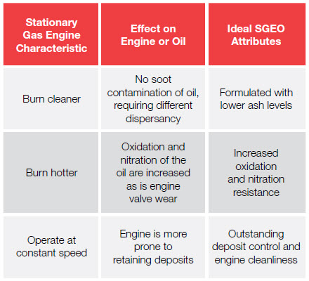
(디젤 연료 엔진과 비교)
이 백서에서는 이러한 NGEO의 각 특성에 대해 더 자세히 살펴봅니다.
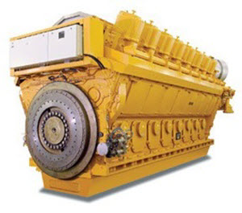
오일 교환 주기가 엔진 신뢰성에 어떤 영향을 미칠까요?
오일 교환 주기, 즉 오일 교환 빈도는 엔진 신뢰성과 밀접하게 연관되어 있습니다. 장기 교환이 가능한 NGEO는 오일을 분해시키고 품질을 저하시킬 수 있는 요인들을 견딜 수 있습니다. 오일 수명이 길어지면 엔진이 안정적으로 작동하고, 유지보수 주기가 줄어들며, 비용 절감 효과도 얻을 수 있습니다.
최적 배수 간격이란 무엇인가?
배수(오일 교환) 서비스 간격은 다양한 조건에서 엔진을 최대한 보호하도록 설계되어 있습니다. ‘배수 시간’이라고도 하며, 이는 엔진 오일을 교환하기 전까지 엔진이 효율적으로 운전할 수 있는 시간을 시간 단위로 측정한 것입니다.
오일 교환 시기는 사용된 오일 분석 결과에 의해 결정됩니다. 사용된 오일의 한계치는 가스 엔진의 원래 장비 제조사(OEM)에 의해 정의됩니다. 이러한 교환 간격은 다음과 같은 요인들로 인해 달라질 수 있습니다.
- 장비의 기계적 설계
- 적용 용도
- 환경
- 가스 상태
최적 배수 간격은 엔진의 내구성을 저해하지 않으면서, 오일 교환이 필요하기 전까지 엔진이 장기간 운전될 수 있도록 합니다.
현장 테스트를 통해 최대 가동 시간을 위해 연장된 오일 수명이 확인되었습니다.
Petro-Canada 윤활유의 SENTRON™ LD 8000, 혁신적인 NGEO는 기존의 배수 간격 기준을 완전히 뒤엎습니다.
SENTRON LD 8000의 혁신 기술은, 세계 주요 기존 NGEO와 비교할 때 운영자가 배수 간격을 최대 300%까지 연장할 수 있도록 도와줍니다.
결과는 표에 나타나 있습니다. 1:
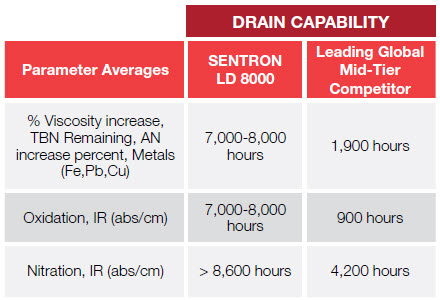
Caterpillar G3500TALE 고정식 가스 엔진을 대상으로 한 시험에서, SENTRON LD 8000은 파이프라인 가스 품질의 고부하(>90%) 조건 하에서 고정식 가스 압축 애플리케이션에서 최대 8,000시간까지 도달했습니다.
“어제만 해도 이러한 엔진에서 8,000시간 배수 간격은 상상할 수 없는 일이었습니다. 이제는 이보다 짧은 간격은 받아들일 수 없게 되었습니다.
SENTRON NGEO는 고성능 장수명 오일로, 다양한 분야의 고정식 가스 엔진과 압축기에 사용되며, 특히 발전과 가스 압축에 중점을 두고 있습니다.
SENTRON LD 8000은 다음 용도에 적합한 프리미엄 저회분 SAE 40 윤활유입니다:
- 천연 파이프라인 가스, 전처리된 하수/바이오가스, 선택적으로 전처리된 공정 가스를 사용하는 4행정 엔진
- 고온 운전 조건에서의 열병합 발전(Co-generation) 운전
배수(오일 교환) 간격의 기준을 한 단계 높이다
SENTRON LD 8000은 엔진의 청정성과 내구성을 유지하면서도 배수(오일 교환) 간격에서 새로운 업계 표준을 제시하며, 2004년 NGEO 성능 기준을 높였던 SENTRON LD 5000을 뛰어넘었습니다. (표 1 참조)
배수(오일 교환) 간격 시간은 적용 분야, 엔진 유형, 환경 조건, 가스 상태 등에 따라 달라질 수 있지만, SENTRON LD 8000은 세계 주요 기존 경쟁 제품보다 더 나은 성능을 보여줍니다.
SENTRON LD 8000은 다양한 OEM의 기준을 충족하고 그 이상을 달성합니다. 예를 들어, Waukesha F3521GSI 엔진의 일반적인 배수(오일 교환) 권장 주기는 기존 제품, 엔진 특성 및 적용 분야를 기준으로 약 1,500시간입니다. 그러나 6개월간의 시험 기간 동안 SENTRON LD 8000은 파이프라인 가스 품질의 연료를 사용하는 열병합 발전 서비스에서 배수 전까지 4,500시간 이상을 기록했습니다. (표 2 참조)
표 2. SENTRON LD 8000 현장 테스트 – Waukesha F3521 GSI 사용 오일 분석
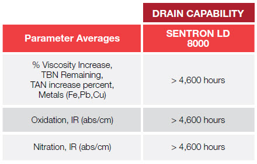
SENTRON LD 8000은 고온 열병합 발전 응용 분야에서 Waukesha F3521GSI 엔진의 사용 오일 분석에서 우수한 결과를 보여줍니다.
배수(오일 교환) 간격 연장이 중요한 이유는 무엇인가?
배수(오일 교환) 간격을 연장할 수 있는 NGEO는 오일 교환 빈도를 줄여 다운타임을 감소시키고 가동 시간을 증가시킵니다. 연속 운전 엔진과 공장 수익 사이에는 강한 상관관계가 있기 때문에, 다운타임을 최소화하는 것은 천연가스 엔진 운전자의 주요 목표입니다.
오일 교환으로 인한 다운타임을 줄이는 것 외에도, SENTRON LD 8000의 연장된 배수 간격은 유지보수 비용을 낮추고 폐기해야 하는 사용 오일의 양을 줄여줍니다. 그 결과, 더 효율적이고 수익성 높은 운전이 가능합니다.
배수(오일 교환) 간격에 영향을 미치는 요인은 무엇인가?
배수(오일 교환) 간격은 오일 열화 속도에 의해 결정됩니다. 오일이 열화되면서 특정한 특성을 띠게 되며, OEM에서 정한 최대 허용 수준에 도달하면 해당 오일은 더 이상 사용할 수 없게 되어 교환이 필요합니다.
오일을 열화시키는 여러 요인에는 다음과 같은 것들이 있습니다.
- 오일의 산화
- 오일 내 형성되는 산
- 산을 중화시키는 오일의 염기성 예비력
- 오일의 질화
- 사용 오일에서 발견되는 미량 금속 및 기타 오염물질
산화는 엔진 오일에서 산소 분자가 오일 분자와 화학적으로 결합할 때 발생합니다. 이로 인해 오일이 점도가 증가하고 산이 형성되며 신선한 오일의 특성을 잃게 됩니다. 산화된 오일은 피스톤과 밸브에 침전물을 형성하여 엔진 수명을 위협할 수 있습니다.
대부분의 화학 반응과 마찬가지로, 오일 산화는 열과 압력에 의해 가속화됩니다. 따라서 산화는 고정식 천연가스 엔진, 특히 고온·고압 운전 조건에서 운전되는 구형 엔진과 새로운 저공해 엔진에서 문제가 됩니다.
특히 열은 산화 과정을 가속화합니다. 또한 엔진 부하는 엔진 내부의 산소량과 압력에 영향을 주어 다음과 같은 과정을 촉진할 수 있습니다:
- 산 형성
- 부식
- 점도 증가(오일 걸쭉해짐)
- 침전물 형성
- 마모
높은 수준의 산화는 다음과 같은 이유로 엔진의 최적 성능을 저해합니다:
- 접촉 표면의 마모율에 영향을 미치는 침전물과 바니시 증가
- 점도 증가 및 슬러지 축적
- 부식 손상
- 배수(오일 교환) 간격 감소
이러한 이유로, 오늘날 대부분의 신형 엔진은 산화 저항성이 높은 오일(분해에 대한 저항력)을 필요로 합니다. 그림 1에서 보듯이, 실험실 테스트에서 SENTRON LD 8000은 항산화제 패키지와 고품질 기유(base oil) 덕분에 높은 산화 저항성을 보여주며, 따라서 뛰어난 오일 수명을 가질 가능성이 있습니다.
그림 1. 산화 – 오일 노화 테스트
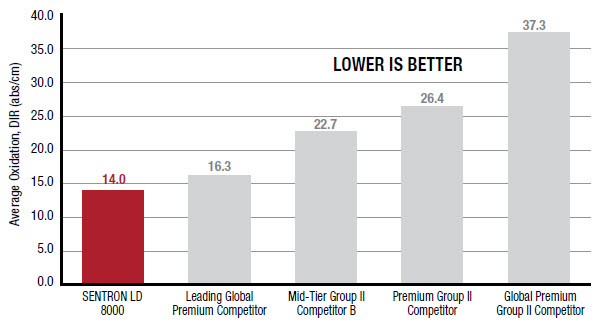
이 오일 노화 테스트에서는 샘플이 IP48 테스트와 유사하게 열에 노출됩니다. 그러나 산소를 기포로 통과시키는 대신, NOx, O₂ 및 공기의 혼합물이 사용되어 일반적인 천연가스 배기가스 성분을 시뮬레이션합니다.
산화 개념은 연소 과정에서 형성되는 산과 밀접하게 관련되어 있습니다. 산화는 오일 수명과 산을 중화하는 능력을 감소시킵니다. 산이 중화되지 않으면 금속 엔진 부품을 손상시켜 서비스 수명과 내구성을 위협할 수 있습니다.
따라서 NGEO는 다음과 같은 특성이 필요합니다:
- 강력한 산 중화 능력(Total Acid Number – TAN)
- 우수한 염기 유지력(Total Base Number – TBN)
엔진 신뢰성과 관련하여, 향상된 산 제어는 배수(오일 교환) 간격을 연장하고 마모를 최소화하는 데 기여합니다.
SENTRON LD 8000은 산화 저항성과 산 중화 측면에서 SENTRON LD 5000을 한 단계 뛰어넘어, 산 형성으로 인한 영향을 방지하는 능력을 향상시켰습니다.
실제 현장 테스트에서 SENTRON LD 8000은 CAT G3500 TALE 엔진에서, 고부하(>90%) 가스 압축 서비스 조건의 파이프라인 가스 품질 환경에서 세계 주요 기존 경쟁 제품보다 더 우수한 TAN 제어를 제공합니다(그림 2). 향상된 TAN 제어는 부식 방지에도 기여할 수 있습니다.
총 염기값(TBN) 유지력은 오일의 산 중화 특성을 정의하는 또 다른 척도입니다. 간단히 말해, TBN 유지력이 높을수록 오일의 산 중화 능력이 뛰어납니다. 엔진 금속을 공격하는 산의 양을 중화함으로써 침전물 형성과 핏팅(pitting) 및 부식도 최소화할 수 있습니다.
SENTRON LD 8000은 Caterpillar G3500 TALE 엔진에서 고부하(>90%) 가스 압축 서비스 조건의 파이프라인 가스 품질 연료를 사용할 때, 주요 기존 경쟁 제품보다 더 우수한 TBN 유지력을 제공합니다. (그림 3 참조)
그림 2. Caterpillar G3500 TALE 현장 시험
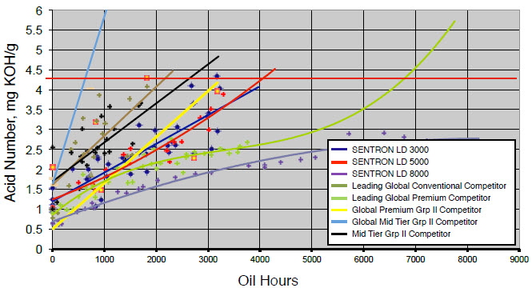
그림 3. Caterpillar G3500 TALE 현장 시험
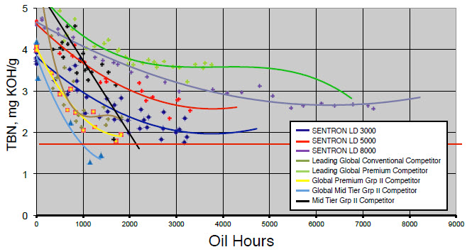
질화 반응(Nitration)은 오일 수명과 교환 주기에 영향을 미치는 또 다른 요인입니다. 이 과정은 오일이 열, 산소, 그리고 질소산화물(NOx)에 노출될 때 자연스럽게 발생합니다. 천연가스 연료 엔진에서는 배기가스에 포함된 질소산화물(NOx)이 피스톤 링과 라이너를 통과(blow-by)하면서 오일과 접촉할 때 질화가 일어납니다. 이러한 블로바이 가스는 라이너 벽의 오일막과 반응하여 슬러지, 바니시(니스와 같은 찌꺼기), 그리고 침전물을 형성합니다. 그 결과 마모를 유발하고 엔진 효율을 떨어뜨리게 됩니다. 또한 이 침전물들은 오일 링이 달라붙게 만들고, 오일 소모를 증가시키며, 엔진 부품의 수명을 단축시킵니다.
산화 작용의 영향과 마찬가지로, 높은 수준의 질화 반응은 다음과 같은 이유로 최적의 엔진 성능을 방해합니다:
- 점도 증가
- TAN(총산가, Total Acid Number)의 변화로 인한 부식성 마모
- 엔진 부품에 유해한 바니시와 침전물 형성
- 오일 교환 주기 단축
오일의 종류가 질화 반응에 대한 저항성을 결정할 수 있기 때문에, 온도·질소산화물·기타 오염물질로 인한 분해를 견딜 수 있는 고품질 오일을 선택하는 것이 중요합니다.
일부 엔진 설계에서는 공기/연료 비율 제어가 더 엄격하게 이루어지기 때문에(화학양론적 조건, stoichiometric conditions), 연소 과정에서 생성되는 NOx가 훨씬 더 많습니다. 이로 인해 더 많은 NOx와 질산염(nitrates)이 생성되며, 자유 산소는 줄어듭니다. 그 결과 질화 반응이나 질산(HNO₃) 생성으로 인해 오일이 폐기(사용 불가 판정)될 가능성이 더 커집니다. SENTRON LD 8000은 이러한 환경에서 질화를 효과적으로 제어하여, 오일에 미치는 영향을 최소화하도록 설계되었습니다. (그림 4 참조)
그림 4. 질화 반응 – 오일 노화 시험
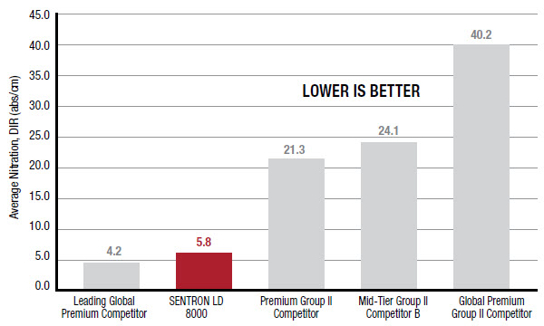
이 오일 노화 시험에서는 시료가 열에 노출되며, 이는 IP48 시험과 유사합니다. 그러나 기포로 주입되는 것이 산소가 아니라, 일반적인 천연가스 배기가스 성분을 모사한 NOx / O₂ / 공기의 혼합물입니다.
사용된 오일 속 미량 금속 및 기타 오염물질
사용된 오일에 포함된 미량 금속, 냉각수 누출, 먼지, 흙, 연료 내 오염물질 등도 오일 교환 주기에 영향을 미칩니다. 철, 납, 구리와 같은 금속은 금속 간 접촉이나 엔진의 금속 부식/침식으로 인해 발생합니다.
SENTRON LD 8000과 같은 고성능 윤활유는 오일 교환 주기를 단축시키고 가동 중단 시간을 최소화할 수 있는 이러한 유해 오염물질로부터 엔진을 보호합니다. 오염물질이 과도하게 유입되는 경우에는 가능한 한 빨리 대응해야 하며, 유입을 제어, 감소 또는 제거하기 위한 조치를 취하는 것이 엔진의 수명을 보장합니다.
엔진 신뢰성을 위한 우수한 오일 교환 주기 달성
요약하면, 오일 교환 주기의 연장은 엔진 신뢰성 향상에 기여합니다. 탁월한 산도 조절 기능과 산화 및 질화 저항성을 갖춘 SENTRON LD 8000과 같은 제품은 최소 가동 중단 시간과 낮은 유지보수 비용을 달성하도록 도와, 보다 효율적이고 수익성 있는 운전을 가능하게 합니다.
침전물 제어와 엔진 청정도가 엔진 신뢰성에 어떤 영향을 미치나요?
앞서 논의한 바와 같이, 슬러지와 바니시를 포함한 침전물의 형성은 엔진 효율 저하와 마모 증가를 초래합니다. 또한 이러한 침전물은 오일 소모를 증가시키고 엔진 부품의 수명을 단축시킬 수 있습니다.
최고 성능의 NGEO(천연가스 엔진 오일)는 밸브, 포트, 피스톤, 라이너, 링 등의 침전물 및 마모를 최소화하는 데 중요한 역할을 할 수 있습니다. 또한 밸브 침하(valve recession) 제어에도 도움을 줄 수 있습니다. 이로 인해 다음과 같은 효과를 얻을 수 있습니다:
- 유지보수 주기 단축과 비용 절감을 통한 엔진 수명 연장
- 엔진 청정도 유지로 최적의 엔진 효율 확보 및 오일 소모 감소
- 엔진 성능 저하 최소화로 최고 성능 유지 및 최대 수익 잠재력 확보
침전물은 어떻게 형성되나요?
천연가스 엔진은 최적의 압력과 온도에서 100% 성능으로 작동하도록 설계되어 있습니다. 그러나 작동 중에는 엔진 내에서 침전물이 불가피하게 생성됩니다. 이는 앞서 언급한 산화 및 질화 과정 등 여러 요인에 의해 발생합니다. 또한, 고정식 가스 엔진은 일정한 속도와 온도로 작동하기 때문에 침전물이 형성되기 쉽습니다. 엔진의 운전 사이클 유형과 작동 환경 또한 침전물 형성에 영향을 미칩니다.
침전물을 최소화하고 엔진을 청결하게 유지하는 것이 왜 중요한가요?
최고 효율로 운전하고 최소한의 가동 중단 시간과 최대 수익을 얻기 위해서는 과도한 침전물 형성을 줄이는 것이 필수적입니다. 엔진이 침전물로 부담을 받으면 엔진 효율에 영향을 미치며, 이로 인해 다음과 같은 문제가 발생할 수 있습니다:
- 엔진 온도 상승
- 출력 생성 또는 가스 압축에 필요한 에너지 손실
- 예점화(Pre-ignition) 및 폭발음(Detonation) 발생
- 엔진 손상
이러한 잠재적 엔진 손상 때문에, 운전 시 엔진 성능을 낮추고 부하를 줄이게 됩니다. 부하 감소는 엔진 출력 감소로 이어지며, 이는 수익에도 영향을 미칠 수 있습니다.
침전물이 링 홈(groove rings)에 형성되면 링이 더 이상 움직일 수 없게 되어 마모가 증가할 수도 있습니다.
에너지 소비
침전물은 예점화(Pre-ignition)를 유발할 수 있으며, 이는 엔진의 불안정성을 초래합니다. 이로 인해 엔진 효율이 저하됩니다.
예를 들어, 피스톤이 자유롭게 상하로 움직일 수 없다면 더 많은 에너지가 사용됩니다. 그 결과 엔진은 동일한 성능을 내기 위해 더 많은 일을 해야 하며, 이 과정에서 에너지 소비가 증가하여 운영 비용이 상승할 수 있습니다.
엔진 성능 저하
엔진이 성능 저하(de-rated) 상태일 때, 엔진은 최적 수준으로 작동하지 않습니다. 이는 종종 침전물의 존재 때문인데, 이에 대한 추가 설명이 필요합니다. 과도한 침전물이 실린더 보어(bore) 마모를 유발하기 시작하면 어느 정도 이해할 수 있지만, 침전물 때문에 성능 저하가 발생한다는 개념은 다소 생소할 수 있습니다 (Clint). 그 결과 엔진에 추가적인 스트레스가 발생하고 출력이 감소합니다. 엔진이 성능 저하 상태일수록 온도가 낮아져 연소가 불완전하게 이루어지고, 금속 표면에 침전물이 더 많이 형성되어 엔진에 남게 됩니다.
엔진 청정도 유지에 기여하는 NGEO는 엔진 성능 저하를 최소화하고 엔진 성능을 최대화하는 데 도움을 줄 수 있습니다.
일부 재(Ash) 침전물은 필요한가요?
모든 재(Ash) 침전물이 불필요하거나 해로운 것은 아닙니다.
일부 침전물은 재(Ash)의 형태로 존재해야 하며, 밸브를 보호하고 밸브 침하(실린더 헤드의 밸브 시트 및 밸브 면 마모)를 방지하는 역할을 합니다.
운전 중 오일이 연소된 후 남는 재(Ash) 잔류물은 밸브 시트와 밸브 면에 보호용 희생층(sacrificial layer)을 형성하여 두 부분이 접촉할 때 발생하는 충격을 흡수함으로써 조기 밸브 침하를 방지하는 데 도움을 줍니다.
현장 시험(Field Testing)은 무엇을 보여주나요?
SENTRON LD 8000은 과도한 침전물을 방지하고 금속 부품의 마모와 접촉을 줄이는 데 도움을 줍니다. 이러한 침전물은 그렇지 않으면 오일 소모 증가를 초래할 수 있습니다.
실제 현장 시험에서 SENTRON LD 8000은 뛰어난 침전물 제어 성능을 보였으며, 마모 방지 기능으로 신뢰성을 높이고 서비스 중단 시간을 최소화했습니다. 시험 결과는 피스톤 청정도가 우수함을 보여주며, 이는 오일 소비를 관리하고 오일 교환 주기를 연장하면서 장비 수명을 늘리는 데 기여할 수 있습니다. (표 3 및 4 참조)
표 3. SENTRON LD 8000 현장 시험 — Waukesha F3521GSI: 엔진 운전 조건 요약
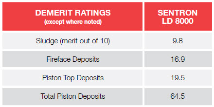
SENTRON LD 8000은 고온 공동발전(co-generation) 조건에서 Waukesha F3521GSI 엔진의 피스톤 총 감점(total piston demerits)을 낮게 유지함을 보여줍니다.
현장 시험에서 SENTRON LD 8000은 가스 압축 서비스에서 고부하(>90%) 조건으로 파이프라인 가스 품질 연료를 사용하는 Caterpillar G3500 TALE 고정식 가스 엔진에서도 뛰어난 청정도와 침전물 제어 성능을 보여주었습니다. (표 4 참조)
표 4. SENTRON LD 8000 현장 시험 — Caterpillar G3500 TALE 시리즈: 엔진 운전 조건 요약
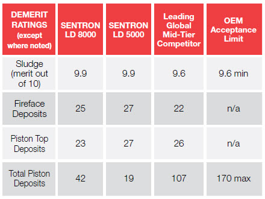
이 현장 시험에서 SENTRON LD 8000은 피스톤 총 감점(total piston demerits)과 슬러지 형성 측면에서 주요 글로벌 중급 경쟁 제품보다 우수한 성능을 보였습니다.
SENTRON LD 8000은 가스 압축 응용 분야에서 새로운 Caterpillar G3516 TALE 고정식 가스 엔진에서도 시험되었습니다. 이 엔진은 8,645시간 운전 후 점검되었으며, 오일 교환 주기는 엔진 시험 내구 기간만큼 길게 유지되었습니다. (그림 5~11 참조)
그림 5. 피스톤
슬러지나 락커 없이 매우 깨끗합니다. 랜드(lands)와 링 홈(ring grooves)에는 최소한의 침전물과 바니시만 확인됩니다.
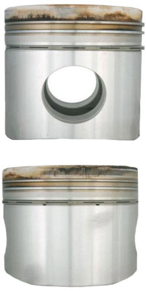
그림 6. 피스톤 상부/실린더 헤드 연소면(Fireface)
과도한 재(Ash) 침전물이 거의 없음
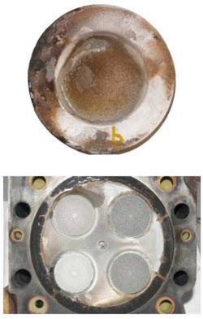
그림 7. 연소실(밸브 없음)
잔류물이 거의 없으며, 밸브 시트가 완전히 맞물려 있고 과도한 침전물도 최소화되어 있습니다.
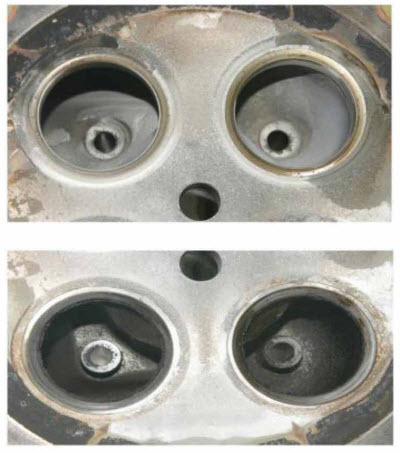
그림 8. 밸브
밸브 스템(valve stems)에 바니시가 거의 없고, 과도한 재(Ash) 침전물이 없으며, 밸브 스템의 대칭적인 패턴으로 자유로운 움직임이 확인됩니다.
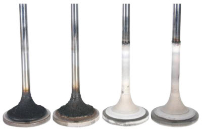
그림 9. 점화 플러그
과도한 침전물 없음.
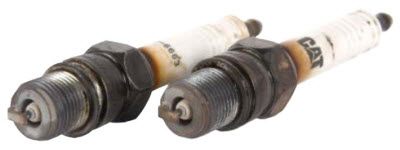
그림 10. 피스톤 언더크라운(Undercrown)
완벽하게 깨끗함
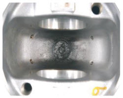
그림 11. 실린더 라이너
실린더 보어 표면 연마가 거의 없으며, 교차 무늬(cross hatching)는 그대로 유지됨
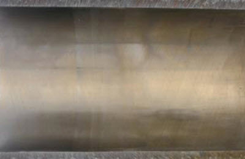
MAN E2842 LD322 고정식 가스 엔진에서 6,500시간 동안 현장 시험을 수행한 결과(출력 420 kW, 1500 rpm, 파이프라인 가스 사용), SENTRON LD 8000은 실린더 헤드, 밸브 및 피스톤에 매우 얇고 유익한 재(Ash) 침전물을 남겼습니다. 실린더 라이너는 양호한 상태를 유지했으며, 교차 무늬(cross hatches)가 쉽게 확인되었습니다.
과도한 침전물은 재료비와 유지보수 비용을 증가시키고, 엔진 신뢰성 및 수익성에도 영향을 미칠 수 있습니다.
우수한 엔진 청정도 및 내구성
요약하면, 천연가스 연료 엔진에서 흔히 발생하는 가혹한 운전 조건은 성능과 연장된 오일 수명을 제공하면서 엔진 침전물 관리를 우수하게 유지할 수 있는 NGEO를 요구합니다.
현장 시험 결과에 따르면, SENTRON LD 8000은 침전물 측면에서 가장 깨끗한 엔진을 구현할 수 있습니다. 고급 첨가제 기술과 순수 기유(base oil) 조합은 내구성과 청정도를 향상시켜 엔진 수명을 연장하는 데 기여합니다.
엔진 신뢰성 향상
산업계가 새로운 엔진을 설계함에 따라, 이를 보호하기 위한 혁신적인 윤활유도 개발됩니다. HF Sinclair의 SENTRON NGEO는 다양한 조건에서 성공적으로 사용된 입증된 실적을 가진 고성능 제품입니다.
SENTRON LD 8000은 성능 기준을 한층 높이기 위해 개발되었으며, HF Sinclair가 NGEO 시장에서 선도적 위치를 유지하도록 도와줍니다. 이를 통해 산화 및 산도 제어 향상, 예방 비용 절감, 그리고 퇴적물 관리 강화가 가능해집니다.
주요 이점
SENTRON LD 8000에 적용된 혁신적인 기술은 운영 관리자와 서비스 관리자에게 혁명적인 저회분 SAE 40 윤활유를 제공합니다. 이 제품은 세계에서도 손꼽히게 순도 높은 베이스 오일로 만들어졌으며, 다음과 같은 주요 이점을 제공합니다.
- 최대 300%까지 연장된 오일 교환 주기 파이프라인급 천연가스를 사용하는 천연가스 압축기 응용 분야에서, 고부하(90% 이상) 조건하에 글로벌 주요 일반 NGEO(천연가스 엔진 오일) 제품과 비교했을 때 최대 3배까지 오일 교환 주기를 연장할 수 있습니다.[1]
- 특수 첨가제 조합이 산을 중화하는 능력을 향상시키는 우수한 TBN 유지력을 제공합니다. TBN(총염기값) 유지력이 높을수록 오일이 산을 중화하고, 교환 주기를 연장하며, 마모·부식·침전물 생성을 최소화하는 능력이 커집니다.
- 최적화된 회분(ash) 수준에서의 침전물 방지 효과 금속 엔진 부품의 마모를 줄이고, 신뢰성을 향상시키며, 정비로 인한 가동 중단 시간을 최소화합니다.
적용 분야
SENTRON LD 8000에 적용된 혁신적인 기술은 운영 관리자와 서비스 관리자에게 세계에서도 손꼽히게 순도 높은 베이스 오일로 만들어진 혁신적인 저회분 SAE 40 윤활유를 제공합니다. 이 제품은 다음과 같은 주요 이점을 제공합니다.
- 천연 파이프라인 가스, 전처리된 하수/바이오가스, 그리고 선택적으로 전처리된 공정 가스 연료원을 사용하는 4행정 엔진
- 고(高)니트레이팅 및 저(低)니트레이팅 환경 모두에 적합. 이로 인해 고니트레이팅 엔진용 별도의 제품을 보유할 필요가 없어, NGEO(천연가스 엔진 오일) 재고를 통합 관리할 수 있습니다.
- 고온·고압 조건의 최신 엔진 설계에 적합
- 엔진오일 섬프(sump)가 작거나, 오일 소모율이 매우 낮은 엔진 (예: 오일 소모율이 0.2 g/kWh 미만인 엔진)
인증 / 승인
SENTRON LD 8000은 다양한 OEM(엔진 제조사) 의 표준을 충족하거나 그 기준을 능가하며, 추가로 아래와 같은 일부 OEM의 선택적 승인 또는 인증을 획득했습니다.
- Caterpillar G3300–G3600 TALE 엔진 인증 완료
- MAN Nutzfahrzeuge M 3271-2 승인 — 천연가스 엔진 적용 분야
- BR MTU-4000 (사전) 승인 — 파이프라인 가스 응용 분야
요약하자면, 산화 및 니트레이션(질소화) 저항성, 침전물 제어, 엔진 청정도 등을 포함한 NGEO(천연가스 엔진 오일)의 교환 주기는 엔진의 신뢰성과 플랜트의 수익성(운영 효율성) 에 모두 결정적인 역할을 합니다.
구체적으로:
- 오일 교환 주기 연장은 가동 중단 시간을 줄이고 효율성과 수익성을 극대화합니다.
- 탁월한 침전물 제어와 엔진 청정도는 엔진 최적화를 크게 향상시킵니다.
엔진 신뢰성과 수익성을 극대화할 수 있는 최적의 NGEO를 선택하세요.
엔진 신뢰성과 수익성을 최대화하려면, 운영 및 서비스 관리자는 오일 교환 주기가 길고 탁월한 침전물 제어 성능을 갖춘 NGEO를 선택해야 합니다.
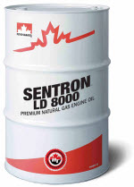
현장 테스트 결과, SENTRON LD 8000은 기존의 오일 교환 주기 기준을 뛰어넘었습니다. 한때 달성 불가능하다고 여겨졌던, 최대 8,000시간까지의 교환 주기[2]가 이제 새로운 표준이 되었습니다. SENTRON LD 8000은 또한 탁월한 침전물 제어와 마모 방지 성능을 보여줍니다. 결과적으로 엔진의 신뢰성, 내구성, 청정도가 향상됩니다. SENTRON LD 8000을 사용하면 마모가 최소화되어 가동 중단 시간과 유지보수 비용이 줄고, 엔진 수명이 연장됩니다.
ComGen Power Solutions 블로그. 2 Engine Oil Killers, Revolutions Per Minute. 2010년 2월 25일.
오일 교환 주기 연장 – 근본 원인 해결. Lubetrak 뉴스레터. 2004년.
Leugner, Lloyd. 천연가스 엔진 윤활 및 오일 분석 – 예측 유지보수 및 상태 모니터링 기초. Machinery Lubrication. 2004년.
Scott, Robert. 고정식 천연가스 엔진 윤활. Machinery Lubrication. 2004년.
SENTRON LD 8000 현장 시험 문서 (LUB3091)
- 시험 1: CAT G3516 TALE
- 시험 2: CAT G3606 TALE
- 시험 3: MAN E2842LE322
- 시험 4: Waukesha F3521GSI